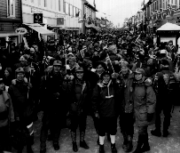

Festkomitéen

Hva er festkomitéen?
En gruppe på 7-8 ansatte med ansvar for avvikling av faste sosiale
arrangementer. Komitéen er dessuten en kreativ og initiativrik gruppe
som står for en rekke store begivenheter utenom det faste opplegget.
Faste arrangementer:
- Årsfest: En stilfull helgetur for ansatte sammen med ektefeller, ledsagere og barn.
Arrangementet foregår på vårparten, og arrangeres vanligvis som en
ski-weekend på et hotell med utfartsmuligheter.
- Båttur: Kveldscruise på Oslofjorden med bevertning, musikk etc. Går av stabelen
i august. Ofte belyses emner som sjørøvere, cowboyer, indianere etc.
gjennom bekledningen og rammen rundt arrangementet.
- Skjennungstua: Skitur til Skjennungstua i Nordmarka. Arrangementet inneholder bl.a.
viltgryte og fakkeltog.
Eksempler på andre arrangementer:
- Sesongbetonte pub’er på Skøyen (kontoret).
- Busstur til OL på Lillehammer med egen villmarksleir like ved
OL-løypene.